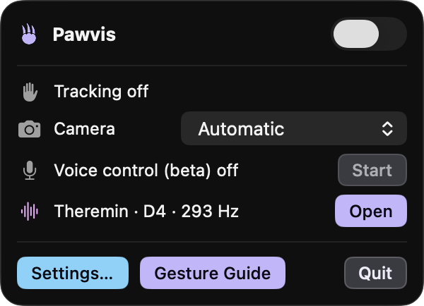

Move
Hold your hand open, fingers up, and move it. The cursor rides your palm.
Touch-free hand control for macOS
Pawvis reads your hand through the webcam: raise it and the cursor follows, dip a finger to click, fold two fingers to scroll. Train gestures of your own to fire any shortcut, app, or command. Nothing to touch, no frame ever leaves your Mac.
Gestures
The camera already built into your Mac watches your hand and tracks its 21 joints many times a second, using Apple's Vision framework. Nothing to wear, nothing to hold, no depth sensor, no hardware to buy. Sit down, hold up a hand, and your Mac can already see it.
Tracking watches whenever it's on, but the cursor only follows once you show an open hand: all four fingers up, thumb free. Close a fist for a moment, or leave the frame, and it parks. A hand that's merely visible, resting or typing or gesturing, never drags the cursor around.
Hold your hand open, fingers up, and move it. The cursor rides your palm.
Dip your index finger, like tapping a mouse button. A quick release is always a clean click.
measured against your middle finger, so tilting your hand can't click
Dip your pinky the same way. Hold it down to right-drag. A third finger can middle-click, off by default.
pinky by default, configurable
Keep the finger down and move. Deliberate movement starts a drag immediately; a short window protects quick clicks from becoming accidental drags.
the window length is a slider
Tap again quickly in the same spot. Chained clicks land where the first one did.
Clicking without the finger dip: hold the cursor still on a target and the click fires on its own, the ring tightening as it counts down. Move away to arm the next one. Built for hands that can't manage a crisp dip; the cursor can also ride a fingertip instead of the palm.
off by default · dwell time is a slider · never fires while pressing, scrolling or parked
Wiggle your fingers at the camera, drum on invisible keys, hold a fist with the thumb up, down, left or right, hold a shaka, or bunch your fingertips and fling them at any edge. Or teach Pawvis a motion of your own: record it a few times and it learns to match it. Every gesture lives in Settings → Gestures, off until you give it an action: switch desktops, move windows, press any shortcut, open any app, run any command. Per-app actions let one gesture mean different things in different apps.
nothing bound by default · per-app actions · train your own from the camera
Fold your middle and ring fingers in, index and pinky up, then move your hand up and down. Switch on horizontal scrolling to go sideways too. The cursor parks while the pose is held.
speed, direction and horizontal scrolling in Settings
Hold up both hands, fingers spread wide, and wave them across each other. Trade sides twice and tracking switches off, the same as the menu bar switch.
optional, on by default; crossings configurable
Auto mode sizes the tracking area from how big your hand looks, so the whole screen stays reachable up close and far away. Manual mode gives you a fixed area and a slider.
On screen, a claw rides your palm: open while pointing, purple while the left button is held, blue for the right, pink for the middle, ringed in light blue while scrolling, faded while control is parked. A ring tightens as your click forms, a pulse confirms every click, and small dots mark each detected fingertip. The menu bar icon opens a live status panel (hands seen, control armed, voice state, and a camera picker once more than one camera is around) plus a Gesture Guide that walks through every move, including the custom ones you bind. A short practice round, run once after the welcome and again from Settings → About, teaches the basics against live targets with the tracker's view of your hand beside the board. The mouse set is tunable in Settings → Mouse; the bindable gestures live in Settings → Gestures, and Settings → Tracking can switch the mouse off entirely, leaving your hands as a remote that only fires the gestures you assign.



Made for
Concrete moments people actually reach for Pawvis instead of the mouse sitting right next to them.
Read, scroll, and browse with an open hand instead of a grip. A mouse-free stretch for the parts of the day an RSI habit already asks you to take one.
Switch Tracking to custom gestures only and your hands become a remote, nothing in your pocket, nothing to plug in. Bind a gesture to advance slides or hit play, and drive the whole deck from the back of the room.
Flour on your hands, coolant on your gloves, chemicals you don't want anywhere near a keyboard: raise a hand at the screen anyway. Fold two fingers to scroll the recipe or the datasheet, dip one to click, and touch nothing.
For anyone who finds a physical mouse the obstacle rather than the tool: hands or a spoken word become the input instead, and the code is open to inspect. Pawvis is still young, working toward real accessibility-grade reliability, not claiming to be there yet.
Voice beta
Switch it on in Settings → Voice (Beta), press Start in the menu bar, and say the wake word. Every command begins with it, so anything you say that isn't meant for Pawvis is ignored: never acted on, never typed, never put on screen.
The wake word is configurable, and mishearings are tolerated. Speech recognition is Apple's on-device engine: private, free, no API key, no cloud. Anything that isn't a set phrase goes to on-device Apple Intelligence, which carries it out step by step: it reads the screen, acts, looks again, and repeats until the request is done, up to eight steps. Say the wake word and “stop” to cancel. That part needs macOS 26; everything else works without it.
optional · off by default
Point Pawvis at an agent CLI you already have installed, Claude Code or Codex, and it stops parsing your speech and starts delegating it. Say “Pawvis, clean up my downloads folder” and everything after the wake word is piped to the agent to carry out with computer use, running headless in the background.
Read this part twice: the agent does not ask. Claude Code and Codex are launched with their own permission prompts turned off, so nothing pauses to confirm anything. Whatever the agent was handed, it carries out, with your account, your files and your logged-in sessions: deleting things, installing things, running shell commands, sending things on your behalf. Speech recognition is not perfect, and a misheard command is still executed. This is also the one mode that sends what you say beyond your Mac. It ships off by default, and Pawvis makes you accept a warning dialog before it will turn on. The spoken read-back is the one check standing in front of a send, you can switch it off, and once a command is sent nothing asks again. Turning it on is your call and your responsibility: no liability is accepted for what an agent does with your machine, however it was asked.
Privacy
on-device
Apple's Vision framework, running entirely on your machine. Camera frames are processed in memory and discarded.
on-device
Apple's on-device engine: SpeechAnalyzer on macOS 26+, SFSpeechRecognizer before that. Voice audio never leaves your Mac.
on-device
On-device Apple Intelligence reads the screen around your pointer. Its snapshots stay in memory, never written to disk, never uploaded.
Compare
macOS already ships three ways to go without a mouse: Head Pointer, Voice Control, and Dwell. Here's an honest read on when each one is the better choice, and when Pawvis is.
macOS built-in
macOS built-in
macOS built-in
All three ship free on every Mac, with years of Apple's own accessibility work behind them: for plenty of people, one of the built-ins is simply the right answer. Pawvis is a different bet: hands as the input, gestures you train yourself and bind to a shortcut, an app, a window snap, a desktop switch, or play/pause, and the whole thing is open source, so you (or anyone else) can read exactly what it does.
FAQ
Often, yes. macOS can share the built-in camera between apps on most modern Macs, so Zoom and Pawvis can both have it open at once. If another app ever takes exclusive control, Pawvis simply stops getting frames until it's released, and hand tracking pauses right along with it.
Tracking runs Vision hand-pose inference on every camera frame while it's on, so there's a real, continuous cost, lighter on Apple silicon than on Intel. Switch tracking off from the menu bar (or quit the app) when you're not using it and that cost goes to zero.
Vision needs a reasonably lit hand to find and track, so a dim room or heavy backlighting makes it flaky, the same as any camera-based tracking. Any camera macOS can see works: the built-in one, a USB webcam, or your iPhone as a Continuity Camera (see below). Pick it in Settings → General or from the menu bar.
Yes. Whenever macOS offers it as a Continuity Camera (nearby, signed in to the same Apple Account, over a cable or not) it appears in the camera picker in Settings → General and in the menu bar; pick it and Pawvis tracks your hand through it. Continuity Camera uses the iPhone's rear lenses, not the selfie camera, so point the back of the phone at you; if Pawvis says the camera shows no image, the lens is looking at nothing. Apple gives Mac apps no way to reach the iPhone's front camera, so there is no front/rear choice to offer. Pawvis never switches cameras on its own: Automatic is your Mac's built-in camera. Unplug the phone and tracking moves to the built-in camera right away and tells you, the picker shows your pick as "not connected", and Pawvis returns to it the moment it is back.
Both, macOS 14 or later either way. Hand tracking leans on Apple's Neural Engine, so it runs noticeably lighter on Apple silicon than on an Intel Mac.
That mode runs on Apple Intelligence's on-device model, which macOS only ships starting with version 26. Everything else in voice, the wake word, the built-in commands, plain speech recognition, works on macOS 14 already.
No, not by default. Hand tracking, speech recognition, and visual commands all run on-device; the one exception is the optional agent hand-off, off until you switch it on, which sends what you say to Claude Code or Codex. See the Privacy section above for exactly what that covers.
Install
Pawvis.zip, always the latest release.
Releases are signed with a Developer ID and notarized by Apple, so it opens normally, with no right-click → Open.
Pawvis lives in your menu bar and starts with you at login. (There's a toggle, and it won't put itself back.)